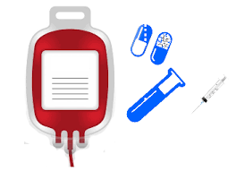
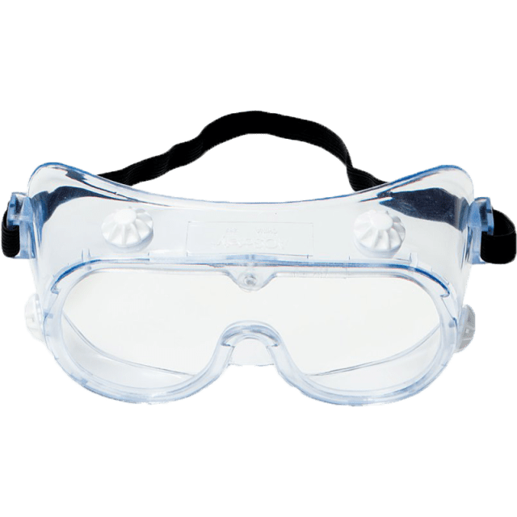

PGIRHS
-
#####
#####
#####
#####
El manejo integral de los residuos hospitalarios se ha constituido en una de las prioridades del Programa de Calidad de Vida Urbana y del Plan Nacional para el impulso de la Política de Residuos del Ministerio del Medio Ambiente, dirigido a formular Programas de Gestión Integral de Residuos hospitalarios, con el propósito de prevenir, mitigar y compensar los impactos ambientales y sanitarios.
Residuos peligrosos: Son aquellos residuos producidos por el generador con alguna de las siguientes características: infecciosos, combustibles, inflamables, explosivos, reactivos, radiactivos, volátiles, corrosivos y/o tóxicos; los cuales pueden causar daño a la salud humana y/o al medio ambiente.
Residuos no peligrosos: Son aquellos producidos por el generador en cualquier lugar y en desarrollo de su actividad, que no presentan riesgo para la salud humana y/o el medio ambiente.
Los Residuos Infecciosos o de Riesgo Biológico: Son aquellos que contienen microorganismos patógenos tales como bacterias, parásitos, virus, hongos, virus oncogénicos y recombinantes como sus toxinas, con el suficiente grado de virulencia y concentración que pueda producir una enfermedad infecciosa en huéspedes susceptibles.
El personal que recoge la ruta sanitaria y transporta los residuos al cuarto de almacenamiento central y temporal, debe utilizar los elementos de protección individual para garantizar la seguridad y Salud en el trabajo y en cumplimiento de las normas de bioseguridad establecidas en la institución.
Los residuos peligrosos infecciosos son recogidos por el personal de Servicios Generales, quien debe retirar de cada caneca o recipiente la bolsa roja, etiquetar, anudar o amarrar de tal forma que garantice contención suficiente, para el transporte al cuarto de almacenamiento central de residuos para todo EMMANUEL INSTITUTO DE REHABILITACIÓN Y HABILITACÓN INFANTIL S.A.S, a excepción de los pisos 2 y 3 de la CLINICA EMMANUEL los cuales serán almacenados en el almacenamiento temporal de residuos hasta la recolección programada al almacenamiento central, por último realiza el pesaje y registro de todos los tipos de residuos, una vez son almacenados en el lugar respectivo, mediante el formato F-GAD-023 Manejo de residuos V04. Éste se encuentra en la documentación del Sistema Gestión de Calidad.
Los residuos infecciosos Biosanitarios, cortopunzantes y Citotoxicos pueden ser llevados a rellenos sanitarios previa desactivación de alta eficiencia (esterilización) o incinerados en plantas para este fin. La desactivación de los residuos biológicos no se realiza dentro de EMMANUEL INSTITUTO DE REHABILITACIÓN Y HABILITACIÓN INFANTIL S.A.S, la empresa encargada de este proceso es DESCONT, la cual hace la disposición final de los residuos Biosanitarios por medio de termo destrucción y/o autoclave, DESCONT Resolución 4484 y TECNIAMSA Resolución 1108.